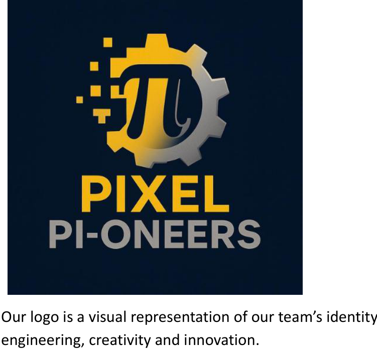
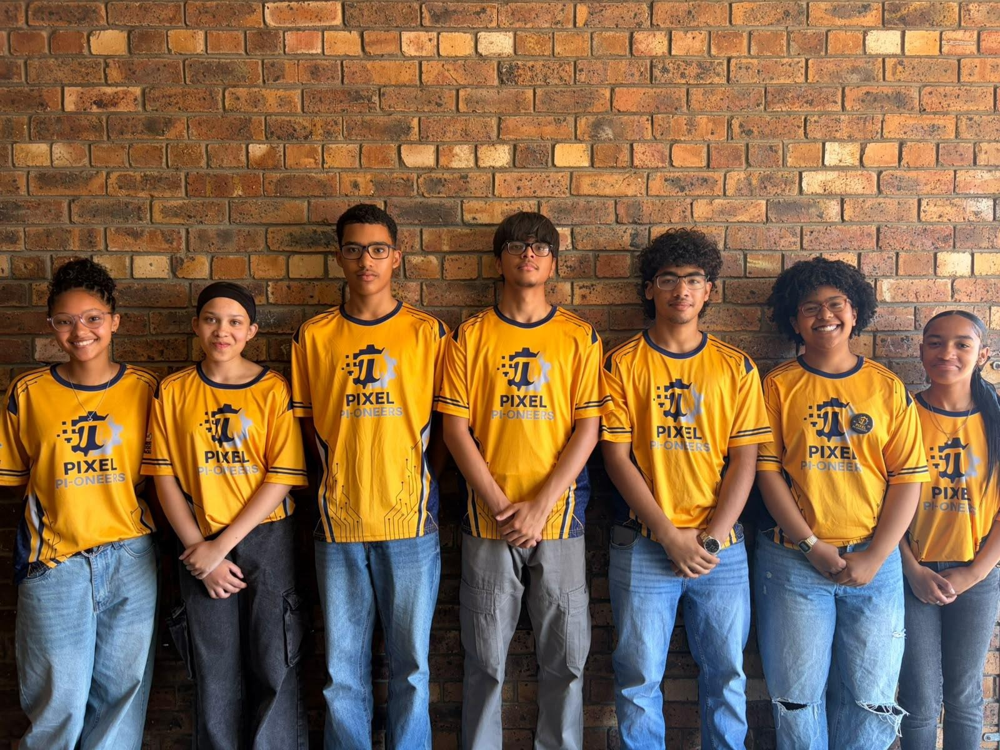
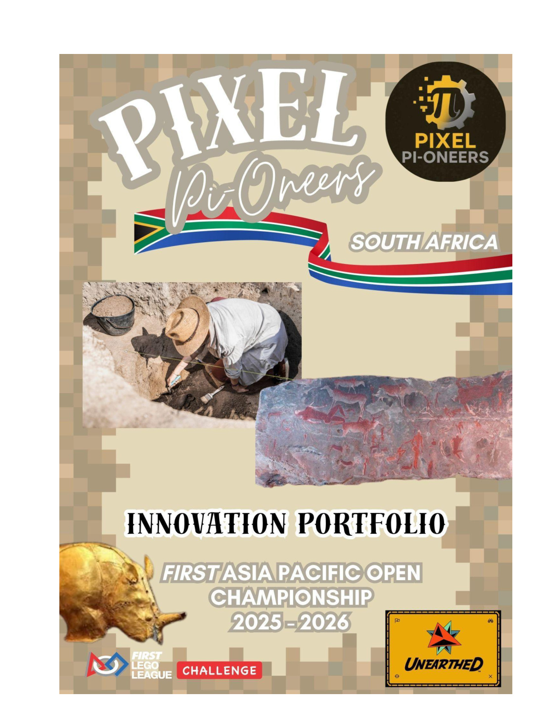
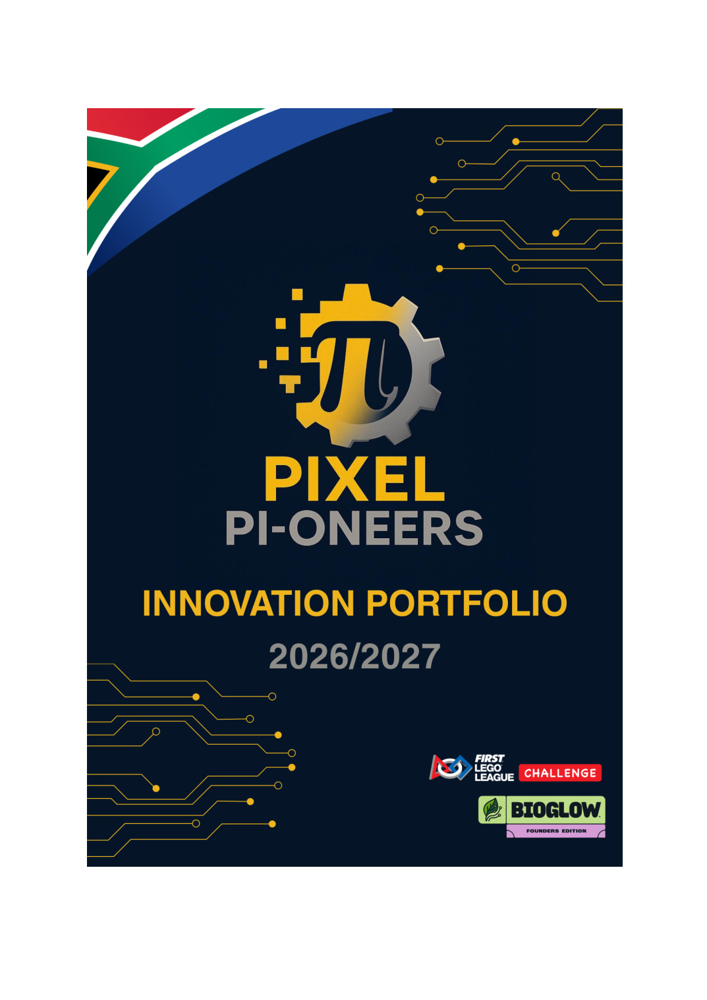
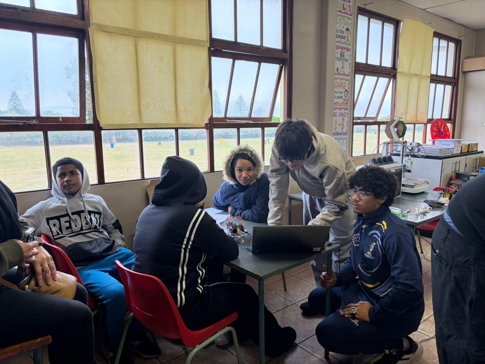
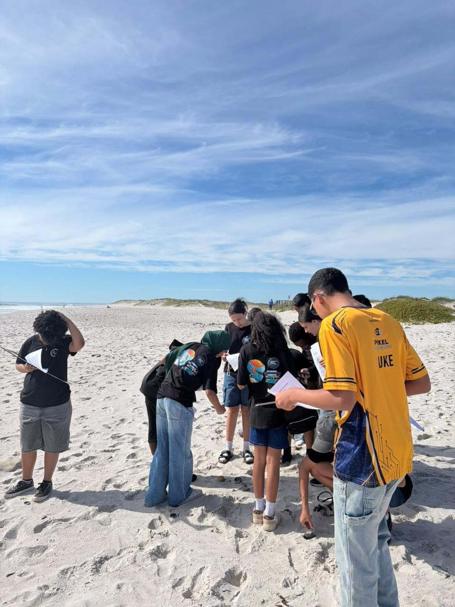
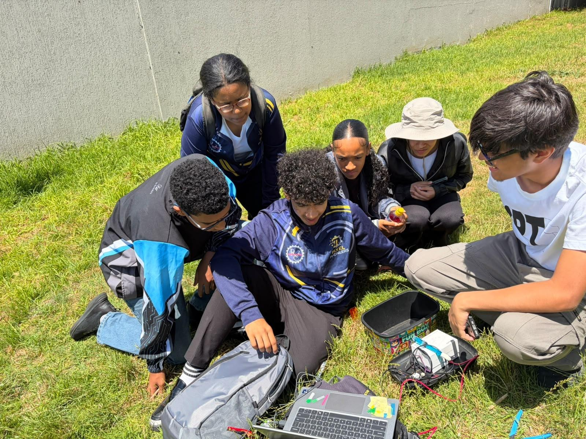

Our first season
We entered FIRST LEGO League UNEARTHED, developed SoilScope and began discovering what we could achieve together.
Explore UNEARTHED →
PIXELPI-ONEERS Connect with us ↗We are Pixel Pi-oneers — a South African robotics team turning curiosity into code, ideas into engineering, and challenges into opportunities.

Pixel Pi-oneers brings together different personalities, strengths and perspectives. We learn by building, improve by listening, and move forward by supporting one another.
Our journey began with our first FIRST LEGO League season in 2025/26. Since then, our work has grown from exploring archaeology to investigating ways technology can help protect freshwater biodiversity.
Follow our timeline →We entered FIRST LEGO League UNEARTHED, developed SoilScope and began discovering what we could achieve together.
Explore UNEARTHED →We represented South Africa at the Asia Pacific Open Championship in Sydney, Australia, and continued sharing STEM in our community.
See our impact →With BIOGLOW, we turned our attention to freshwater ecosystems and developed CHEMTRACE.
Explore BIOGLOW →Each challenge gives us a new reason to research, design, build, test and rethink what is possible.

SEASON 01 · FIRST YEAROur debut season challenged us to explore archaeology and rethink how researchers identify promising excavation sites.

SEASON 02 · CURRENT SEASONOur current season focuses on freshwater biodiversity and the need to identify unusual water-quality changes earlier.
Our innovation projects start with a question: what could work better, and how could we help?
Archaeologists can spend significant time surveying large landscapes where traces of past human activity may be hidden. Our first-season concept was a remote-controlled robotic survey system designed to gather information about soil and environmental conditions before excavation.
Using an Arduino UNO R4 WiFi, soil-moisture and DHT22 sensors, ultrasonic sensing and a live web interface, SoilScope aimed to help researchers inspect terrain and make better-informed decisions about where to investigate.
Back to UNEARTHED season ↑Freshwater ecosystems support a huge range of life, but pollution and changing water conditions can go unnoticed between occasional tests. CHEMTRACE is our modular water-monitoring and early-warning concept for rivers, vleis and wetlands.
Our prototype direction combines water-quality sensors, location-based records and a digital dashboard. Readings can be compared over time, helping identify unusual changes and potential hotspots that conservationists can investigate. It is an early-warning tool, not a laboratory test or a device that identifies every pollutant.
Back to BIOGLOW season ↑For us, impact is not limited to competition day. We believe knowledge grows when it is shared.
We helped run Arduino and 3D-printing sessions, as well as a Micro:bit bootcamp introducing learners to coding and electronics.
We mentor rookie FLL members and younger WRO teams, sharing lessons on robot design, attachments, strategy and Pybricks coding.
From a Blouberg beach clean-up to community showcases, we connect technology with the places and people around us.



We take STEM beyond our team by teaching, mentoring, volunteering and making technology more accessible in our community.
Two Saturdays of practical learning with a robotics engineer and former FTC competitor, exploring Arduino and 3D printing.
With a facilitator from Delft Primary School, we introduced learners to coding and electronics.
We support younger World Robot Olympiad teams with robot design, structural basics, game strategy and attachment choices.
We presented our innovation project, spoke with visitors at our booth and volunteered as robot-game referees.
During coastal research at Blaauwberg Nature Reserve, we helped clear litter from the shoreline and support the local ecosystem.
We guide our club's rookie FLL team through rules, research, robot building, presentations and Pybricks coding.
We showcased our FLL innovation project and robot alongside our FTC robot, spoke with visitors and gathered biodiversity questionnaire responses.
Our portfolio records more than 5,700 views and 87 net followers in the previous 30 days through regular social posts.
Explore our season portfolios and innovation work. Documents open as PDFs in your browser, where you can also download them.
Our first-season innovation research and development journey.
Our current research into freshwater chemical contamination and biodiversity.
We are grateful to the organisations that supported our FLL UNEARTHED celebration event and helped make community engagement possible.
These organisations are listed as supporters of our UNEARTHED Celebration Event on 6 June 2026, as recorded in our team portfolio.
Our team culture is built on inclusion, trust, curiosity and the belief that every contribution matters. We challenge one another, learn from feedback and celebrate progress together.
Think you know our journey? Try the mini challenge.
Interested in our projects, STEM outreach or the journey so far? We'd love to connect.
Follow the journey, meet the team and see what we are building next. Replace YOUR_TEAM_HANDLE in index.html with your real Instagram username.